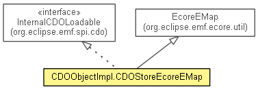

org.eclipse.emf.internal.cdo
Class CDOObjectImpl.CDOStoreEcoreEMap
java.lang.Object
 org.eclipse.emf.common.util.BasicEMap<K,V>
org.eclipse.emf.ecore.util.EcoreEMap<Object,Object>
org.eclipse.emf.internal.cdo.CDOObjectImpl.CDOStoreEcoreEMap
org.eclipse.emf.common.util.BasicEMap<K,V>
org.eclipse.emf.ecore.util.EcoreEMap<Object,Object>
org.eclipse.emf.internal.cdo.CDOObjectImpl.CDOStoreEcoreEMap
- All Implemented Interfaces:
- Serializable, Cloneable, Iterable<Map.Entry<Object,Object>>, Collection<Map.Entry<Object,Object>>, List<Map.Entry<Object,Object>>, EList<Map.Entry<Object,Object>>, EMap<Object,Object>, EStructuralFeature.Setting, InternalEList<Map.Entry<Object,Object>>, InternalEList.Unsettable<Map.Entry<Object,Object>>, InternalCDOLoadable
- Enclosing class:
- CDOObjectImpl
- public class CDOObjectImpl.CDOStoreEcoreEMap
- extends EcoreEMap<Object,Object>
- implements InternalCDOLoadable

For internal use only.
- Since:
- 4.1
- See Also:
- Serialized Form
| Methods inherited from class org.eclipse.emf.ecore.util.EcoreEMap |
addAllUnique, addAllUnique, addUnique, addUnique, basicAdd, basicContains, basicContainsAll, basicGet, basicIndexOf, basicIterator, basicLastIndexOf, basicList, basicListIterator, basicListIterator, basicRemove, basicToArray, basicToArray, get, getEObject, getEStructuralFeature, initializeDelegateEList, isSet, newEntry, newList, set, setUnique, unset |
| Methods inherited from class org.eclipse.emf.common.util.BasicEMap |
add, add, addAll, addAll, clear, clone, didAdd, didClear, didModify, didRemove, doClear, doMove, doPut, doRemove, entryForKey, entryIndexForKey, entrySet, equals, get, get, grow, hashCode, hashOf, indexOf, indexOf, indexOfKey, iterator, keySet, lastIndexOf, listIterator, listIterator, map, move, move, newEntryData, put, putAll, putAll, putEntry, remove, remove, removeAll, removeEntry, removeKey, resolve, retainAll, set, subList, toArray, toArray, toString, useEqualsForKey, useEqualsForValue, validateKey, validateValue, values |
| Methods inherited from interface org.eclipse.emf.common.util.EList |
move, move |
| Methods inherited from interface java.util.List |
add, add, addAll, addAll, clear, equals, get, hashCode, indexOf, iterator, lastIndexOf, listIterator, listIterator, remove, remove, removeAll, retainAll, set, subList, toArray, toArray |
CDOObjectImpl.CDOStoreEcoreEMap
public CDOObjectImpl.CDOStoreEcoreEMap(EStructuralFeature eStructuralFeature)
ensureEntryDataExists
protected void ensureEntryDataExists()
- Ensures that the entry data is created and is populated with contents of the delegate list.
- Overrides:
ensureEntryDataExists in class BasicEMap<Object,Object>
size
public int size()
- Specified by:
size in interface Collection<Map.Entry<Object,Object>>- Specified by:
size in interface List<Map.Entry<Object,Object>>- Overrides:
size in class BasicEMap<Object,Object>
isEmpty
public boolean isEmpty()
- Specified by:
isEmpty in interface Collection<Map.Entry<Object,Object>>- Specified by:
isEmpty in interface List<Map.Entry<Object,Object>>- Overrides:
isEmpty in class BasicEMap<Object,Object>
contains
public boolean contains(Object object)
- Specified by:
contains in interface Collection<Map.Entry<Object,Object>>- Specified by:
contains in interface List<Map.Entry<Object,Object>>- Overrides:
contains in class BasicEMap<Object,Object>
containsAll
public boolean containsAll(Collection<?> collection)
- Specified by:
containsAll in interface Collection<Map.Entry<Object,Object>>- Specified by:
containsAll in interface List<Map.Entry<Object,Object>>- Overrides:
containsAll in class BasicEMap<Object,Object>
containsKey
public boolean containsKey(Object key)
- Specified by:
containsKey in interface EMap<Object,Object>- Overrides:
containsKey in class BasicEMap<Object,Object>
containsValue
public boolean containsValue(Object value)
- Specified by:
containsValue in interface EMap<Object,Object>- Overrides:
containsValue in class BasicEMap<Object,Object>
cdoInternalPostLoad
public void cdoInternalPostLoad()
- Specified by:
cdoInternalPostLoad in interface InternalCDOLoadable
cdoInternalPreLoad
public void cdoInternalPreLoad()
- Specified by:
cdoInternalPreLoad in interface InternalCDOLoadable
Copyright (c) 2012 Eike Stepper (Berlin, Germany) and others.